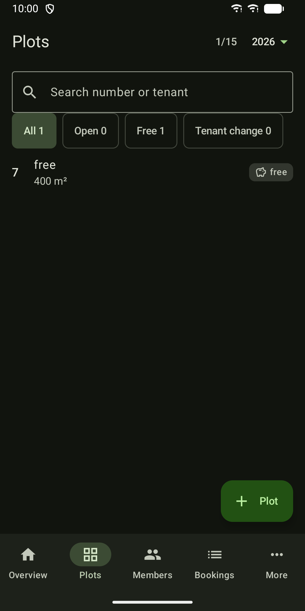
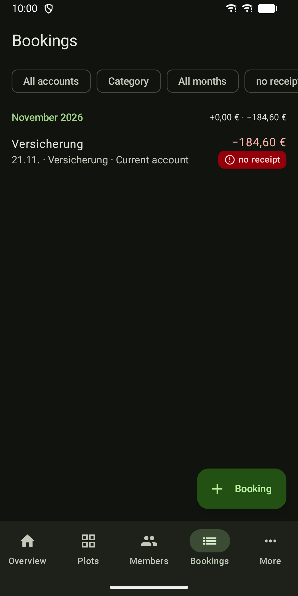

Kleingarten-Kasse für Vereine
Pacht, Beiträge, Zähler und Belege für Kassenwarte im Kleingartenverein







Über die App
Die Vereinskasse für den Kleingartenverein, direkt auf dem Handy. Ohne Konto und ohne Tabellen. Kleingarten-Kasse ist für den Kassenwart gemacht, der Pacht, Beiträge und Umlagen bisher in Excel oder auf Papier verwaltet. Die App rechnet die Jahresabrechnung, erstellt die Pachtrechnungen und liefert, was die Kassenprüfung braucht. PARZELLEN UND MITGLIEDER - Parzellen mit Größe in m² und Pächterhistorie. - Pächterwechsel mitten im Jahr: Alle Kosten werden monatsgenau aufgeteilt. - Mitglieder mit und ohne Parzelle, mit Kontaktdaten und Kontostand. JAHRESABRECHNUNG - Pachtzins pro m² oder pauschal je Parzelle, Mitgliedsbeitrag und Umlagen. - Wasser und Strom nach Zählerstand, auf Wunsch mit Grundgebühr. Schnelle Erfassung Parzelle für Parzelle, mit Warnung bei unplausiblen Ständen. - Gemeinschaftsstunden: Pflichtstunden, geleistete Stunden und Ersatzbetrag je Fehlstunde. - Pachtrechnung als PDF mit IBAN und Verwendungszweck, per Mail oder Messenger teilen. BUCHUNGEN UND BELEGE - Girokonto und Barkasse mit eigenem Stand sowie Umbuchungen zwischen beiden. - Einnahmen und Ausgaben mit Kategorie. Zahlungen werden automatisch den offenen Forderungen zugeordnet, Teilzahlungen inklusive. - Beleg fotografieren oder als Datei anhängen. Die App weist auf Buchungen ohne Beleg hin. - Offene Posten: Wer hat noch nicht oder nur teilweise bezahlt? KASSENPRÜFUNG - Bericht als PDF und CSV: Anfangsbestand, Einnahmen und Ausgaben nach Kategorie, Endbestand je Konto und alle Buchungen mit Belegverweis. - Geschäftsjahr abschließen, damit sich danach nichts mehr ändert. Bei Korrekturbedarf lässt es sich wieder öffnen. DATENSCHUTZ UND SICHERHEIT - Die App hat keine Internet-Berechtigung. Ihre Daten werden nirgendwohin gesendet. - Datenbank und Belege sind auf dem Gerät verschlüsselt. - App-Sperre mit Fingerabdruck oder Geräte-PIN. Ab Android 13 bleibt die Vorschau der letzten Apps leer. - Verschlüsselte Sicherung mit Passwort in eine Datei Ihrer Wahl. Wiederherstellung aus derselben Datei. WIDGET - Offener Betrag, Zahl der säumigen Mitglieder und Kontostände auf dem Startbildschirm. Beträge lassen sich ausblenden. PARZELLENGRENZE UND PRO - Alle Funktionen stehen Vereinen mit bis zu 15 Parzellen zur Verfügung. - Mehr als 15 Parzellen erfordern Pro, einen optionalen einmaligen In-App-Kauf über Google Play. Alles andere ist auch ohne Pro enthalten. Helles und dunkles Design folgen der Systemeinstellung. Große Schaltflächen und Unterstützung für TalkBack. Die App gibt es auf Deutsch und Englisch. Rechnungen und Berichte werden immer auf Deutsch erstellt.